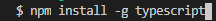
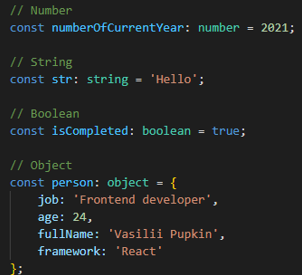
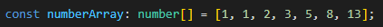
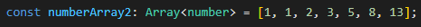
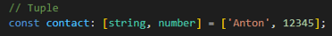
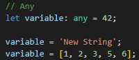
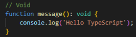
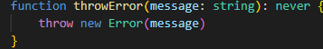
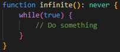

TypeScript is statically typed JavaScript that is mainly used for building complex and large applications.
Why typescript is needed and when to use it
TypeScript is needed only at the development stage, it takes the JavaScript core and overlays new abstractions on top of it, and which at the development stage allows you to catch a large number of problems, write more structured and beautiful code
Advantages of TypeScript
- Can catch errors at the stage of their development
- Allows you to write more complex applications with comfort
- Refactoring your code becomes easier
- It's much easier to work in a development team
- Very rich documentation
Cons of typescript
- An extra additional layer that needs to be implemented at the development stage, but often it pays for itself
How to install
You can install via npm

Basic types
- Boolean
- Number
- String
- Null
- Undefined
- Symbol
- Object
Some examples with basic types

Own additional types
- Array
- Tuple
- Any
- Void
- Never
- Enum
Array
Array is defined in two ways
- 
- 
Tuple
It's an array of different data types

Any
Used when we can assign values of different data types to a variable

Void
Used when our function returns nothing

Never
Used when a function returns an error and does not finish its execution, or when it constantly does something


Author: Anton Mihailov
Thanks!